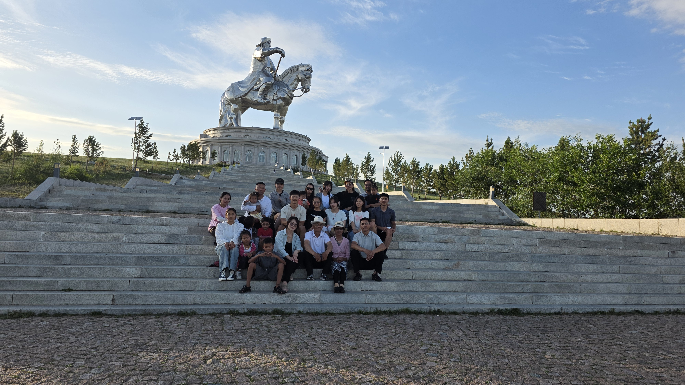

Аавын талын гэрэл зурагАавын талын өвөө, эмээ
Нэр: М. Үнэнбат, Д. Норолхоо
Төрсөн нутаг: Увс аймаг, Хяргас - Өндөрхангай сум
Аавын талын өвөө, эмээ маань миний амьдралд үлгэр дуурайл болсон эрхэм хүмүүс юм.
Өвөө маань Политехникийн коллежийг улаан дипломтой төгсөж, Увс болон Архангай аймгуудад уурхайн маркшейдерийн инженерээр олон жил үр бүтээлтэй ажилласан. Ажил мэргэжилдээ эзэн болсон, аливаа асуудлыг нухацтай шийдвэрлэж чаддаг, хөдөлмөрч хүн билээ.
Харин эмээ маань миний хувьд хамгийн дотно, түшигтэй хүмүүсийн нэг. Сэтгэл зовнисон, хэцүү мөч тулгарахад би эмээтэйгээ ярилцаж, зөвлөгөө авдаг. Эмээ минь Архангай аймагт сувилагчаар 30 гаруй жил ажиллаж, олон хүний эрүүл мэндийн төлөө сэтгэл зүрхээ зориулсан хүн юм.
Тэдний хөдөлмөрч зан, хүнлэг сэтгэл, амьдралын туршлага нь бидний гэр бүлийн эрхэм үнэт зүйлсийн нэг билээ.